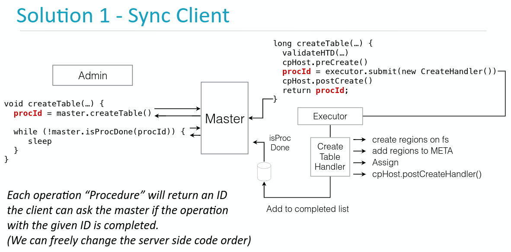

Ch09-HBase 之 Procedure v2
March 7, 2021
HBase Procedure V2 其主要目标是提供多步执行的事务能力，跨多节点的通知机制，长时间 Procedure 运行的协同机制。
1. 基本介绍 #
HBase Procedure v2 提供了一种对内的事务能力，注意这里是对内的事务。简单来说，这里不是 HBase 数据层面的事务，而是操作步骤层面的事务。在 Procedure v2 出来之前，HBase 的操作过程处于一种伪事务的状态，同步操作的流程也处于一种伪同步的流程。在分布式的环境下，如果一个操作环节出现了问题，那么处理起来也非常棘手。
比如在 Master 中的 CreateHandler() 任务交给了线程池，并没有实现真正意义上的同步。而且如果 CreateHander() 的创建过程如果非常长，或者出现了失败，也没有足够的回滚机制来将 Master 中存储的信息会滚到之前的状态。这些在 HBase 的稳定性上面都存在极大的隐患，基于此，HBase 社区与 2.0.0 引入 Procedure V2 来解决这一系列问题。 比如上图的问题，采用 Procedure V2 就可以实现为如下，将这个“伪异步”的线程作为一个 procedure，当执行后，返回一个 procId，然后客户端就可以根据这个 procId 确认该步骤是否完成。

2. 基本架构 #
整个 Procedure v2 模块分为图中所示的三大块，每块各司其主共同完成事务操作。 ProcedureExecutor 首先会将 Procedure 本身提交给 ProcedureStore 完成持久化，接着由 ProcedureExecutor 将该 Procedure Load 出来，push 到 ProcedureScheduler。ProcedureExecutor 然后从 ProcedureScheduler 的队列中 poll 出 Procedure 交由 WorkThread 执行，如果中间产生了若干状态或者中间结果，也会将其插入到 ProcedureStore 中暂存下来。
3. 核心组件 #
Procedure 相关的类均被定义在 hbase-procedure 包里面，目前也仅仅只有 HMaster 会用到。Procedure 的几个组成模块中，每个模块定义了几个非常重要的方法。
| 名称 | 方法 | 说明 |
|---|---|---|
| Procedure | execute(), rollback() | 定义了具体的执行步骤，有点类似与执行模板/蓝图之类的概念 |
| ProcedureExecutor | sumitProcedure(Procedure), isFinished(procId), getResult(procId) | 负责提交、执行 Procedure。Procedure 的执行操作主要由内部的多个 WorkerThread 来完成 |
| ProcedureStore | load(Proc), insert(Proc), update(Proc), delete(Proc) | 用来持久化新提交的 Procedure 以及后续的每一次状态更新值，默认实现类为 WALProcedureStore |
| ProcedureScheduler | enqueue(), dequeue() | 负责调度一个集群内的各种类型的 Procedure 请求，支持按优先级调度，相同优先级的 Procedure 则支持公平调度。 |
注意：
- Procedure##execute() 方法和 Procedure##rollback() 方法，实现要求必须具有幂等性，即无论执行多少次，其结果应该是一样的。也正是因为这两个方法的存在，使得 Procedure 可以保证事务性。
- ProcedureStore 默认实现类为 WALProcedureStore。当文件超过一定大小后或者超过一定的时间周期后，会 roll 一个新的 WAL 文件出来，避免一个 WAL 文件过大；如果 WAL 日志无用的时候，会进行清理。。
- ProcedureScheduler 共有两种，一种是 MasterProcedureScheduler，另一种是 SimpleProcedureScheduler(几乎弃用)。
4. 应用场景 #
| 名称 | 说明 |
|---|---|
| Acls | 访问控制 |
| WAL Splitting | 分配 WAL 文件，让 RegionServer 在启动的时候进行重放 |
| AssignmentManager V2 | 将 Region 分配到不同的 RegionServer 上 |
5. 常见执行模型 #
| 条目 | 说明 |
|---|---|
| StateMachineProcedure | 主要基于状态机确定每个 Procedure 的执行状态是否正确，实际的应用比如 CreateTableProcedure |
| RemoteProcedureDispatcher | 通过 RPC 确定每个 Procedure 的执行状态是否正确，实际的应用比如 ServerCrashProcedure |